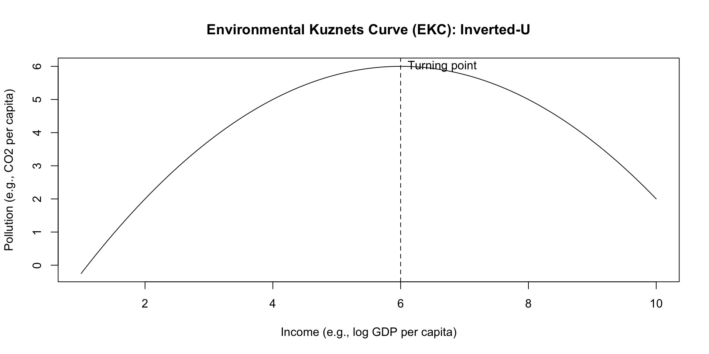

Lecture 3
Panel Data Models
January 28, 2026
👥📈 Panel Data Models
👥📈 Panel Data Models: POLS → FE → TWFE → RE
Learning goals
- Understand what panel data is (and why we love it)
- Compare Pooled OLS, Fixed Effects, Two-Way FE, and Random Effects
- Learn what variation each model uses and what it controls for
- Understand country-clustered standard errors (and why we need them)
What is Panel Data?
Panel data tracks the same units over multiple time periods:
- Unit (\(i\)): country (USA, Korea, India, …)
- Time (\(t\)): year (1990–2022, …)
Example (CO\(_2\) panel): - Outcome: CO\(_2\) emissions per capita - Unit ID: iso_code - Time ID: year
Tip
Panel data gives us two kinds of variation: - Between variation: differences across countries - Within variation: changes within a country over time
Why Use Panel Models (Not Only Pooled OLS)?
Pooled OLS can be misleading because it ignores unobserved country differences that don’t change much over time, such as:
- 🌍 geography / climate / natural resources
- 🏭 industrial structure and history
- 🏛️ institutions and regulation
- ⚡ energy infrastructure and technology path
- 🧑🤝🧑 culture and long-run lifestyle patterns
These factors can affect both
- emissions (or other outcomes) and
- GDP per capita (or other regressors)
➡️ That creates omitted variable bias when we use Pooled OLS.
🧠 Unobserved Heterogeneity (The Core Issue)
Suppose the true relationship includes an unobserved country component:
\[ y_{it} = \beta x_{it} + \underbrace{\alpha_i}_{\text{unobserved country trait}} + \epsilon_{it} \]
If we ignore \(\alpha_i\) and estimate Pooled OLS:
\[ y_{it} = \beta x_{it} + u_{it} \quad \text{where} \quad u_{it} = \alpha_i + \epsilon_{it} \]
⚠️ If \(Cov(\alpha_i, x_{it}) \neq 0\), then:
- \(x_{it}\) is correlated with the error term
- Pooled OLS is biased
Fixed Effects is designed to solve exactly this problem.
1️⃣ Pooled OLS (POLS)
Pooled OLS: Baseline Model
Model \[ y_{it} = \beta_0 + \beta_1 x_{it} + \epsilon_{it} \]
Meaning
- We pretend the dataset is one big cross-section
- We ignore the panel structure (country identity)
Uses all variation
- between-country variation
- within-country variation
What POLS is Really Doing
When you estimate POLS, the slope \(\beta_1\) reflects a combination of:
- Cross-country differences (rich vs. poor countries)
- Within-country changes (one country over time)
So interpretation becomes:
“On average, countries with higher \(x\) have higher (or lower) \(y\), and/or when \(x\) rises over time, \(y\) moves…”
⚠️ That can be fine only if unobserved country traits don’t confound the relationship.
⚠️ The Big Risk in POLS: Omitted Variable Bias
If richer countries also have different institutions, energy systems, or historical industrialization paths, then:
- \(x_{it}\) (GDP per capita) is correlated with \(\alpha_i\) (unobserved traits)
- Pooled OLS mixes together the effect of \(x_{it}\) and the influence of \(\alpha_i\), so the estimated \(\beta\) can be misleading.
Panel methods help because they explicitly control for \(\alpha_i\).
2️⃣ Fixed Effects (FE)
Country Fixed Effects (FE)
Model \[ y_{it} = \beta x_{it} + \alpha_i + \epsilon_{it} \]
- \(\alpha_i\) = country fixed effect
- captures all time-invariant country characteristics
- geography, long-run institutions, baseline culture, etc.
FE answers a within-country question:
“If a country’s \(x\) changes over time, how does \(y\) change within that same country?”
🔎 What FE Controls For (Automatically)
Because each country gets its own intercept \(\alpha_i\), FE controls for:
- any factor that is constant within a country
- even if you do not observe or measure it
Examples (time-invariant or very slow-moving):
- distance to equator
- landlocked status
- baseline political system
- deep energy infrastructure
📌 FE is powerful because it controls for a lot without measuring those things.
FE Uses Only Within-Country Variation
FE does not use differences between countries:
- It does not compare USA vs India levels
- It compares USA over time to itself
So FE is best when:
- the key confounding problem is time-invariant
- we care about within-country causal interpretation
⚠️ FE cannot estimate effects of variables that do not change over time, e.g.:
landlocked,continent,distance_to_equator
3️⃣ Two-Way Fixed Effects (TWFE)
Two-Way Fixed Effects (Country + Year FE)
Model \[ y_{it} = \beta x_{it} + \alpha_i + \gamma_t + \epsilon_{it} \]
- \(\alpha_i\): country FE (time-invariant traits)
- \(\gamma_t\): year FE (global shocks / common trends)
TWFE answers:
“Within a country, how does \(y\) change with \(x\), after removing global year shocks?”
🌍 Why Add Year Fixed Effects?
Year effects capture shocks that hit many countries at once:
- 🛢️ oil price spikes
- 📉 global recessions (e.g., 2008)
- 🦠 pandemics
- 💡 global technology trends
- 🌐 global climate agreements
If we don’t include \(\gamma_t\), the regression may mistakenly attribute these common shocks to \(x_{it}\).
Year FE helps remove this confounding.
4️⃣ Random Effects (RE)
Random Effects (RE)
Model \[ y_{it} = \beta x_{it} + \alpha_i + \epsilon_{it} \]
Same structure as FE… but different assumption:
- RE treats \(\alpha_i\) as random
- and assumes it is uncorrelated with regressors:
\[ Cov(\alpha_i, x_{it}) = 0 \]
If that assumption holds:
- RE is more efficient than FE (smaller standard errors)
- RE uses both within and between variation
⚠️ When RE Fails (Bias Risk)
If \(Cov(\alpha_i, x_{it}) \neq 0\), then RE is biased.
In many economic settings, this correlation is very plausible:
- richer countries may also have better institutions (inside \(\alpha_i\))
- energy system differences affect both GDP and emissions
So FE is often the safer default in applied work.
🧠 Standard Errors in Panel Data
🧠 Why We Cluster Standard Errors (Country-Clustered SE)
The problem: errors are correlated within countries
In panel data, observations inside a country are rarely independent:
- shocks persist over time
- policies change gradually
- measurement errors repeat
- emissions and GDP move smoothly
That means residuals may satisfy serial correlation:
\[ Cov(\epsilon_{it}, \epsilon_{is}) \neq 0 \quad \text{for } t \neq s \]
If we ignore this, standard errors are often too small → false “significance”
Cluster-Robust Standard Errors (by Country)
Country-clustered SEs allow:
- arbitrary correlation over time within a country
- heteroskedasticity across countries
Interpretation:
“We allow any kind of serial correlation within each country.”
In R (plm), this is typically implemented using robust VCOV options, e.g. vcovHC() with clustering by group.
vcovHC: variance–covariance, heteroskedasticity-consistent
Model Summary (What Each One Controls For)
| Model | Controls for country traits? | Controls for year shocks? | Uses between-country variation? |
|---|---|---|---|
| Pooled OLS | ❌ No | ❌ No | Yes |
| Country FE | Yes (time-invariant) | ❌ No | ❌ No |
| Two-way FE | Yes (time-invariant) | Yes | ❌ No |
| Random Effects | Yes (modeled as random intercept) | Optional | Yes |
Final Takeaway (Panel Models)
We use panel data models to estimate relationships within units over time, while controlling for:
- hidden country characteristics (\(\alpha_i\))
- global year shocks (\(\gamma_t\))
And we use clustered SEs because panel residuals are often correlated within each unit.
🌿 Environmental Kuznets Curve (EKC): Growth vs. Pollution
🌿 Environmental Kuznets Curve (EKC): Growth vs. Pollution
Now we add the key EKC idea:
What is the EKC?
The Environmental Kuznets Curve (EKC) hypothesis suggests:
As a country becomes richer, pollution first increases,
but after some income level, pollution decreases.
It is often described as an inverted-U relationship between:
- pollution (e.g., CO\(_2\) per capita)
- income (GDP per capita)
📉📈 Draw the EKC Curve (Inverted-U)
Intuition: Why Might EKC Happen?
As income rises, countries often experience:
- Scale effect 📈: more production → more emissions (early stage)
- Composition effect 🏗️➡️🧑💼: shift from industry → services (middle stage)
- Technique effect 🧪⚡: cleaner technology + regulation (later stage)
EKC is the balance of:
- growth pressures that increase emissions
- development forces that can reduce emissions
Important Caveat for CO\(_2\)
EKC may be weaker for CO\(_2\) than for local air pollutants because:
- CO\(_2\) is deeply tied to energy systems
- benefits are global, costs are often local
- emissions may shift across borders via trade (carbon leakage)
So EKC is a hypothesis to test, not a guaranteed pattern.
💡Quick Review: Graph for a Quadratic Function

EKC Panel Regression (Country-Year Data)
A common EKC specification:
\[ \log(CO2pc_{it}) = \beta_1 \log(GDPpc_{it}) + \beta_2 \left[\log(GDPpc_{it})\right]^2 + \alpha_i + \gamma_t + \epsilon_{it} \]
- \(i\): country
- \(t\): year
- \(\alpha_i\): country fixed effects
- \(\gamma_t\): year fixed effects
How to Interpret EKC Coefficients
If \(\beta_1 > 0\) and \(\beta_2 < 0\)
emissions rise at first, then eventually fall
→ EKC pattern (inverted-U)If \(\beta_2 = 0\)
→ relationship is linearIf \(\beta_2 > 0\)
→ U-shape (emissions accelerate with income)
EKC Turning Point (Income Level)
The turning point occurs where the slope becomes zero:
\[ \frac{\partial \log(CO2pc)}{\partial \log(GDPpc)} = \beta_1 + 2\beta_2 \log(GDPpc) = 0 \]
So the turning point in log income is:
\[ \log(GDPpc^*) = -\frac{\beta_1}{2\beta_2} \]
Convert back to the income level:
\[ GDPpc^* = \exp\left(-\frac{\beta_1}{2\beta_2}\right) \]
At \(GDPpc^*\), CO\(_2\) per capita stops rising and begins falling (if EKC holds).
Final Takeaway (EKC)
EKC tests whether pollution follows an inverted-U with income.
Panel FE/TWFE help make that test more credible by controlling for:
- country traits (\(\alpha_i\))
- year shocks (\(\gamma_t\))